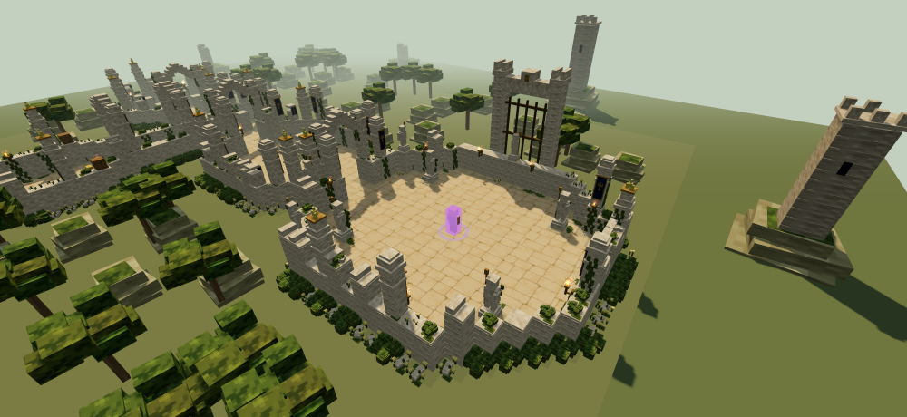

石卫遗迹 · 1–5 层全部房间首轮美术
使用实际随机地图种子 411485540，以下是 33 个房间的游戏 WebGL 检视截图。为检查建筑，使用斜俯视相机、隐藏 HUD；此页不展示战斗演示。点图片可看原图。
已经覆盖 10 种章节专属房型、基础功能房与商店外观。本轮残损与远景以低成本、明显改善为目标：碎裂墙冠、石构件残片、苔痕岩台和外圈残塔。精细雕刻、复杂自然地形与角色升级不在本轮范围。
第五层 · 沉铁王门

第 1 层 · 6 个房间
第 2 层 · 7 个房间
第 3 层 · 7 个房间
第 4 层 · 8 个房间
第 5 层 · 5 个房间
查看此前材质、墙缝和火源近景